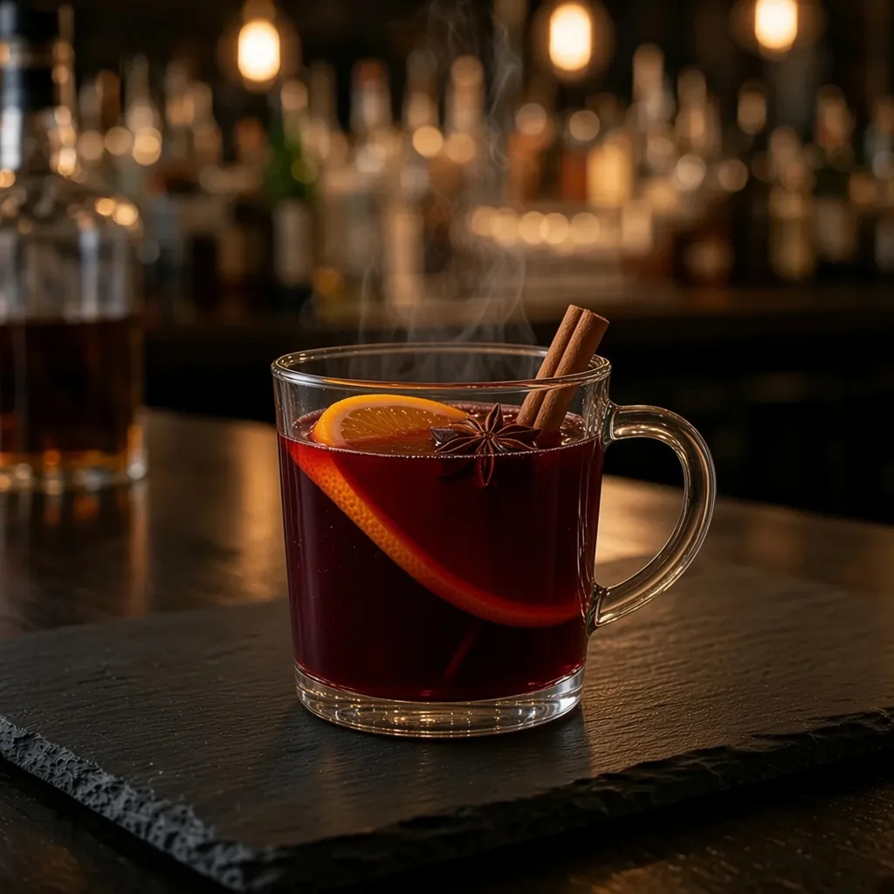
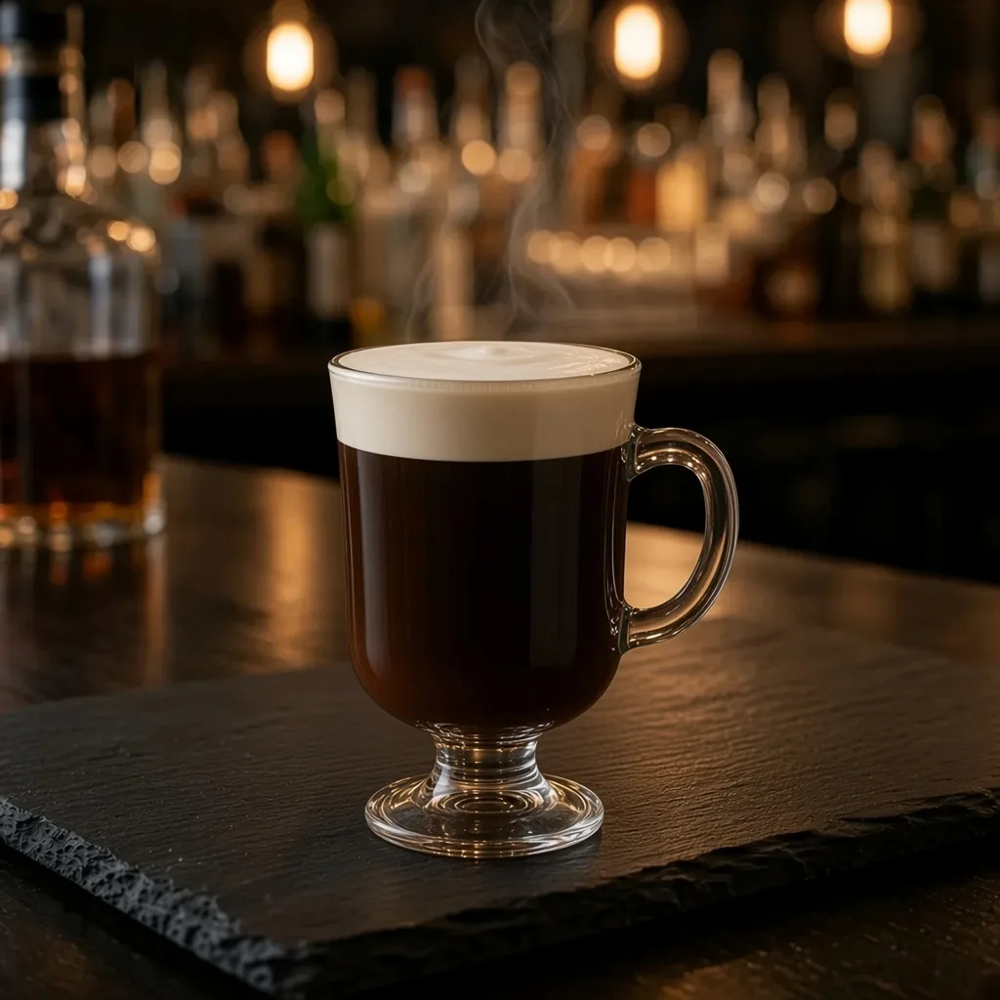
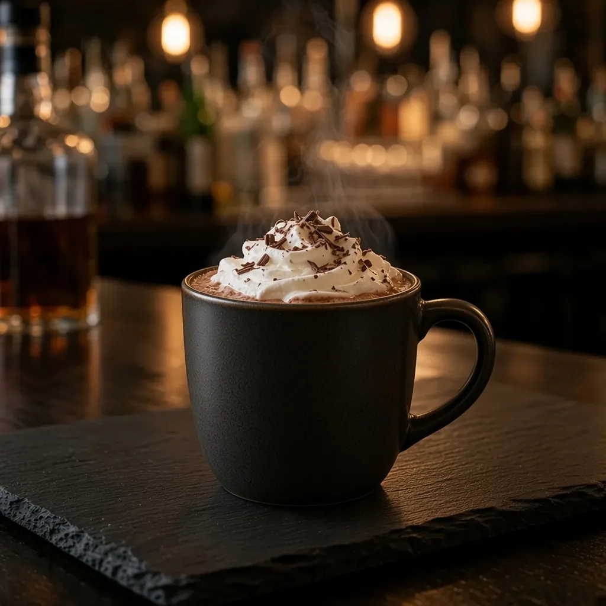
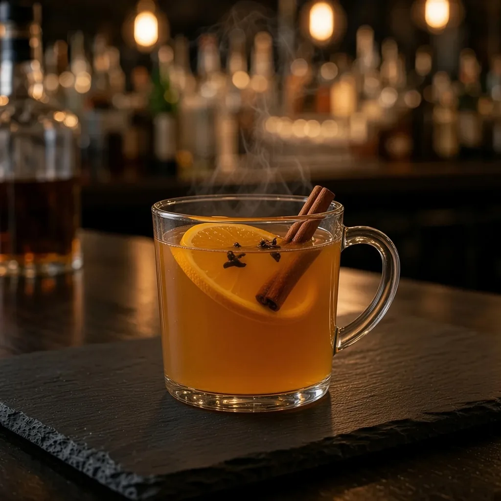

Home / Drinks / Hot drinks
Mulled Wine
Red wine warmed slowly with orange and spices. Keep it below a simmer.

Home / Drinks / Hot drinks
Red wine warmed slowly with orange and spices. Keep it below a simmer.

Use 3 cups red grape juice and 1 cup cranberry juice in place of the wine and brandy.
Pour it, then start a room. Drinking is optional in every game.

Irish CoffeeHot coffee, Irish whiskey and brown sugar under a layer of cream. Hot Buttered RumDark rum with spiced butter and brown sugar melted into hot water.
Spiked Hot ChocolateHot chocolate with a shot of Irish cream and whipped cream on top.
Mulled CiderApple cider simmered with spices, with spiced rum added at the end.